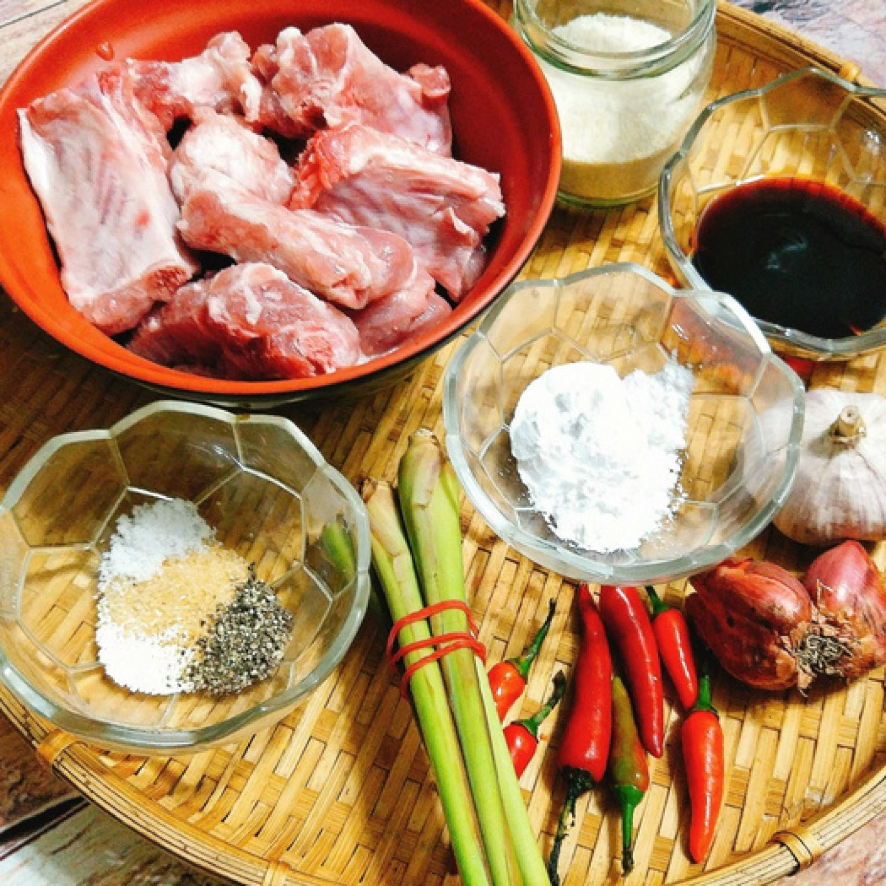
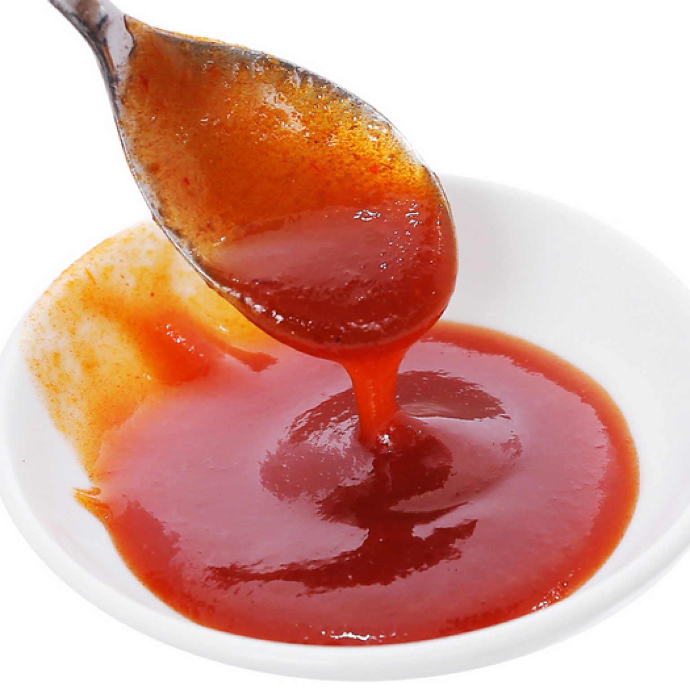
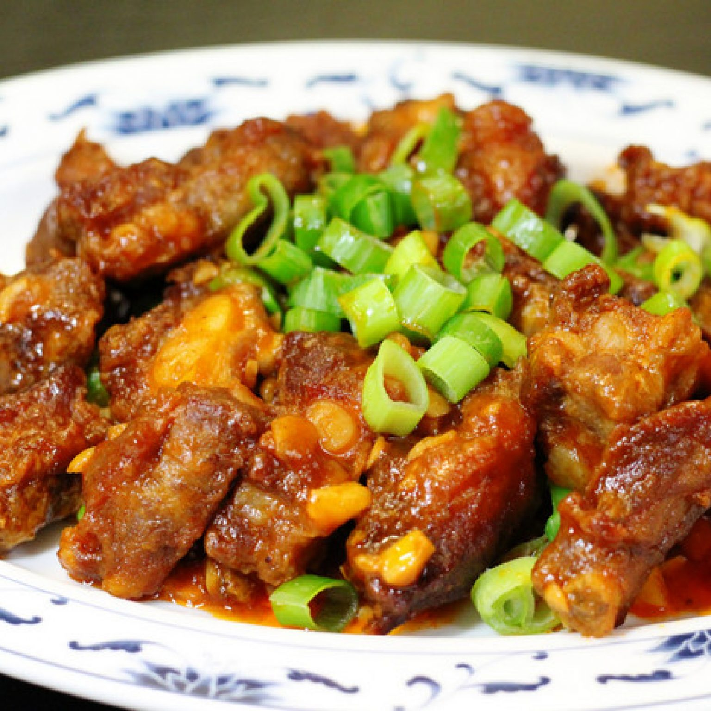

August 18, 2020 Thời gian :
Nguyên liệu cách làm món sườn chua ngọt như thế nào
Trước khi bắt tay vào xào nấu bạn hãy chuẩn bị, mua sắm đầy đủ các nguyên liệu cần dùng. Nếu sợ quên hay thiếu một món đồ gì đó hãy ghi ra một tờ giấy ghi nhớ nhé! Điều này sẽ hỗ trợ bạn rất nhiều trong công việc tìm kiếm đấy. Những nguyên liệu cần thiết khi làm cách làm món sườn chua ngọt bao gồm:
– 500gr sườn thăn.
– 5 thìa đường nhỏ.
– 5 thìa nhỏ giấm hoặc chanh.
– Hành lá, gia vị, muối, mắm, bột canh, ớt, dầu ăn, hành khô, tỏi
* Lưu ý để món ăn thơm ngon hơn bạn nên lựa chọn những miếng thịt sườn non, có xương nhỏ và nhiều thịt. Ngoài ra, hãy chọn loại tươi ngon không bị mùi, ôi thiu khi ấn nhẹ vào có lực đàn hồi.
Các bước làm món sườn chua ngọt ngon đúng điệu
Hiện nay, để thỏa mãn khẩu vị của nhiều thực khách các đầu bếp đã biến tấu ra rất nhiều kiểu cách làm món sườn chua ngọt khác nhau. Tuy nhiên, theo nhiều gia đình món sườn xào truyền thống vẫn là món ăn đầy đủ hương vị và thơm ngon nhất. Bởi chúng không chỉ ngon về mùi vị, mà còn bổ về tinh thần, khiến cho những người con xa xứ phải nhớ mãi không quên.
Vậy cách làm sườn truyền thống là gì? Hãy cùng chúng tôi tìm hiểu ngay bây giờ.
Bước 1: Sơ chế nguyên liệu
Để món ăn đảm bảo an toàn vệ sinh thực phẩm bạn cần phải rửa sách các nguyên liệu như sườn, rau củ. Tiếp theo là chặt miếng vừa ăn rồi trần qua nước sôi với chút muối để khử sạch mùi hôi.
Sau đó rửa sạch lại ướp sườn với hạt nêm, mắm, gia vị vừa ăn tầm khoảng 10 phút để chúng thấm đều vào từng thớ thịt. Tiếp theo trong thời gian ngâm sườn bạn cần phải bóc hành, tỏi và đập dập, rửa sạch, cắt khúc nhỏ hành lá để trang trí.
Bước 2: Hướng dẫn cách pha nước sốt
Muốn làm sườn xào chua ngọt thơm ngon, cuốn hút người ăn bạn cần phải pha nước sốt một cách điêu luyện, tinh tế để giúp hương vị cân bằng và cùng nhau bùng nổ.
Vậy công thức pha sốt thần thánh là gì? Đó chính là pha 5 thìa đường, 5 thìa dấm, tỏi, ớt, nửa già bát con nước. Bạn đổ các gia vị và khuấy đều. Ngoài ra, để món ăn thêm thú vị và độc đáo hơn. Bạn có thay dấm bằng chanh, cà chua hay me. Lưu ý nếu dùng chanh bạn nên cho chúng vào cuối cùng. Bởi vì khi đun lâu chanh sẽ trở nên đắng và khiến cho hương vị của món ăn không được hoàn mỹ như trước.
Ngoài ra, cần phải quan sát làm sao để nước sốt phải thật sánh và có màu đỏ thẫm đẹp mắt. Để làm được điều này bạn hãy cho thêm một chút tương ớt, tương cà hoặc cà chua. Những nguyên liệu này sẽ giúp màu sắc của sườn trở nên bắt mắt và hấp dẫn hơn hẳn.
Bước 3: Xào sườn chua ngọt
Sau khi chần sườn qua nước sôi, bạn nên để ráo nước rồi cho vào chiên qua với dầu ăn. Vì điều này sẽ giúp miếng sườn thơm, giòn và ngon hơn. Lưu ý không nên chiên quá lâu tránh để sườn bị khô, quắt lại.
Tiếp theo sau khi chiên xong sườn bạn hãy phi hành khô cho thật thơm vàng và giòn. Rồi đổ hỗn hợp nước sốt vào và để lửa nhỏ đun sôi. Sau đó, cho sườn vào hỗn hợp và đảo đều đun tiếp đến khi sền sệt thì tắt bếp. Lưu ý đun nhỏ lửa tầm 5 phút. Sau đó có thể cho thêm một chút nước lạnh. Điều này sẽ làm miếng sườn của bạn sẽ mềm và ngấm đều gia vị hơn.
Sau khi đã làm xong nếu muốn món ăn thêm đẹp mắt và hấp dẫn. Bạn hãy lấy một chút hành lá cắt nhỏ rồi rắc lên miếng sườn.
Với cách làm món sườn chua ngọt thơm ngon, nức mũi trên mà chúng tôi chia sẻ. Chúng tôi mong bạn sẽ nhanh chóng thực hành và chinh phục được nhiều khẩu vị khác nhau. Đây sẽ là một món ăn lý tưởng giúp cho mâm cơm của gia đình thêm phần ấm cúng và đáng nhớ.